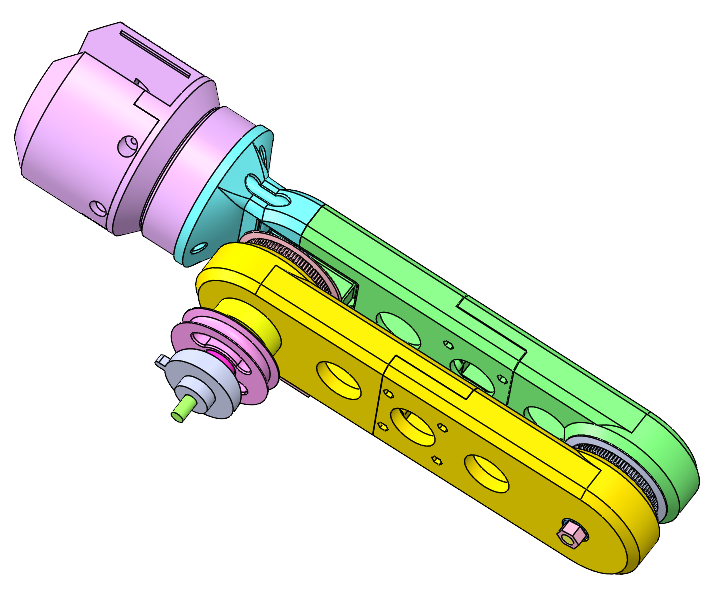

Novel mechanism: Single Input, Dual Joint Movement with Integrated, Self-Contained Motion Control

Company: ONN / Makers Department
Description: Designed a mechanical, human-powered solution for a client who required robot arms capable of movement without electricity. These arms were mounted on a backpack to support video cameras as part of a video prop.
My Role: I translated the client's vision into a functional, mechanical design that operated entirely without external power sources. The challenge was to fit the mechanism within the physical constraints of an existing backpack while ensuring smooth, controlled movement. Through multiple iterations of CAD modeling and prototypes, I refined the design, overcoming the limitations of 3D printing and ensuring precise movement.
Outcome: Delivered a functional robotic arm system with a self-contained control mechanism. The design featured a novel shoulder joint that used human power to coordinate complex movements of both the arm and forearm, without the need for electrical controllers. This innovative solution demonstrated the potential for mechanical systems in applications where mechatronic control is typically used, expanding possibilities for power-independent robotic designs.
Most robotic mechanisms require independent actuators for each joint. Here, a single internal pulley at the shoulder simultaneously controls both the shoulder and elbow joints — reducing mechanical complexity, saving weight and space, and improving energy efficiency by powering one actuator instead of two.
A GT2 belt connects the shoulder and elbow pulleys, directly translating arm rotation into forearm movement. This creates a natural “orbiting” effect at the elbow and allows precise control over range of motion through pulley size ratio — without a dedicated motor at the elbow.
A static external pulley at the shoulder drives forearm orbit purely through belt interaction as the arm rotates — an effect that typically requires gear trains or multi-link kinematic systems. This passive coordination across joints is a key novelty of the design.
Rather than a dedicated return actuator, gravity handles the reset passively. This reduces energy consumption, simplifies control logic, and provides a self-balancing feature without sacrificing control during the actuation phase.